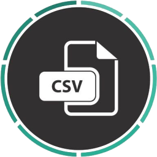

Autorzy:
Mateusz Skoczek (styczeń 2019 - wrzesień 2020)
dla ZSP Sobolew
Inne informacje:
Język programowania, użyty w programie: Python
Biblioteki:
Biblioteki GUI:
Języki, użyte do stworzenia strony z instrukcją i dokumentacją techniczną: HTML, CSS, JavaScript